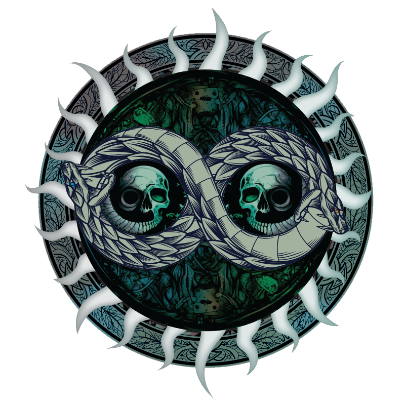
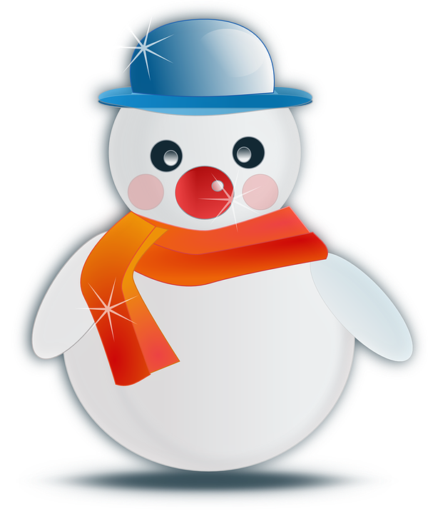
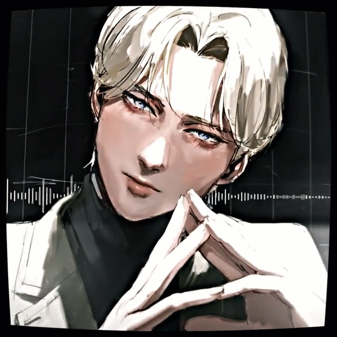

Thông Tin
Biệt Hiệu: Wz Pablo / Oz Pablo
Mã Định Danh: 0520 8500 5665
Số Điện Thoại: 085 7700 247
Thư Điện Tử: Mail@Pablo.ID.VN

Lời Dẫn
Câu Chuyện
Viết Tiếp
Dự Án


Biệt Hiệu: Wz Pablo / Oz Pablo
Mã Định Danh: 0520 8500 5665
Số Điện Thoại: 085 7700 247
Thư Điện Tử: Mail@Pablo.ID.VN
